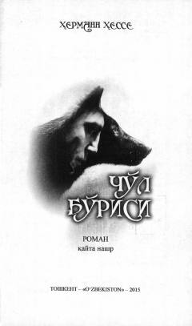

CBInson ruhiyati va yolg'izlik haqidagi chuqur falsafiy va psixologik roman.
Ushbu roman insonning ichki dunyosi, ruhiy iztiroblari va o'zligini anglash yo'lidagi kurashini aks ettiruvchi teran psixologik asardir. Asar bosh qahramoni Harri Xaller o'zini jamiyatdan uzilgan, yolg'iz va 'cho'l bo'risi' kabi his qiluvchi shaxs sifatida namoyon etadi. Muallif inson tabiatidagi ziddiyatlar va ma'naviy inqirozni yuksak mahorat bilan tasvirlaydi.